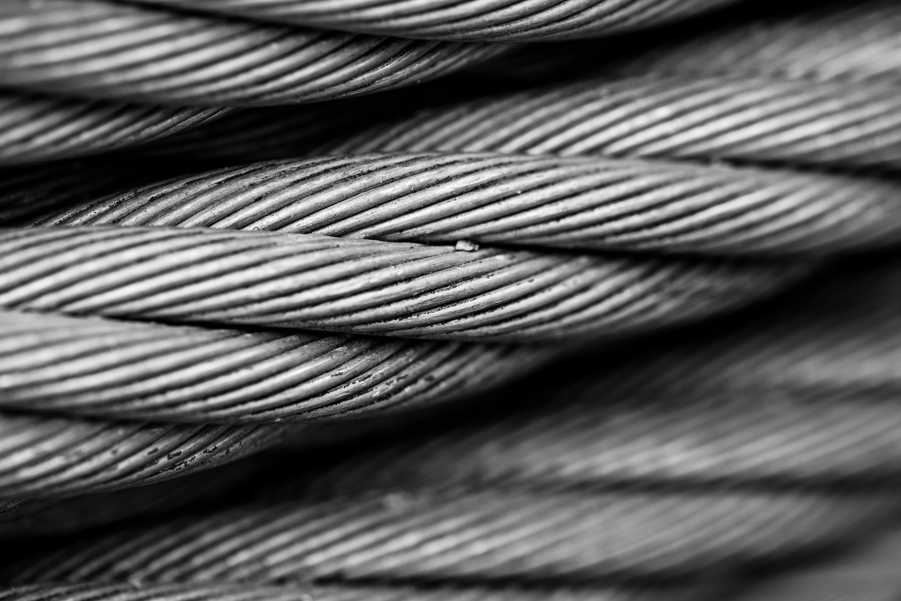
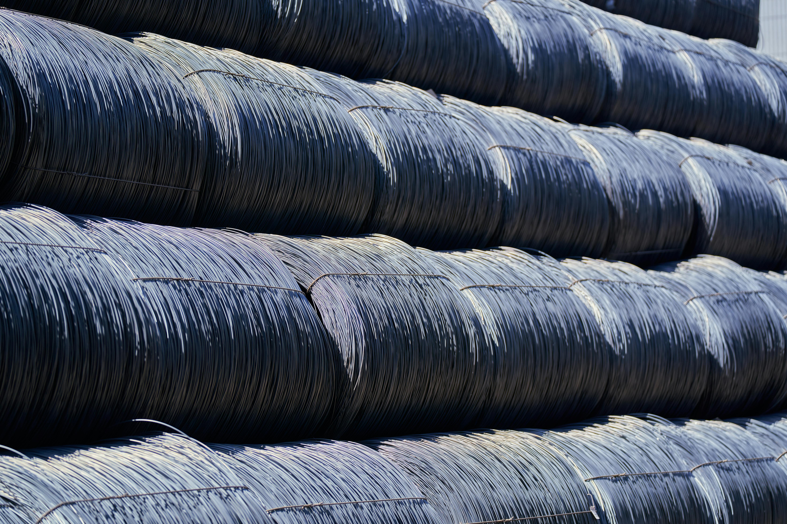
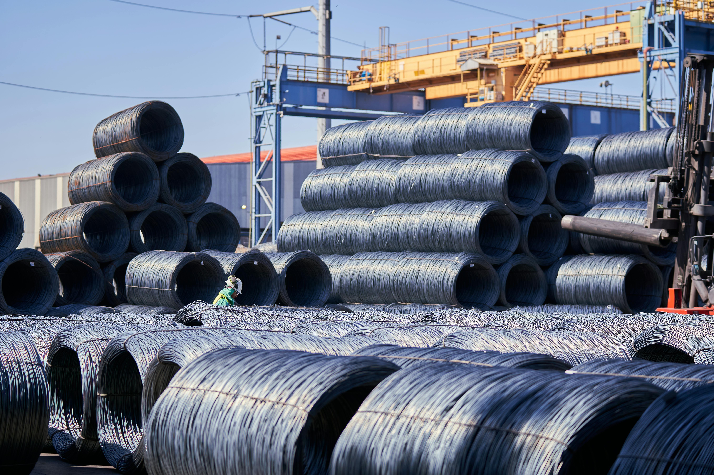

Distributor tali kawat baja dan aksesoris rigging terlengkap di Indonesia — bersertifikat, teruji, dan siap kirim ke seluruh nusantara.

Setiap produk melewati uji tarik dan memenuhi standar nasional serta internasional untuk keamanan operasional.
Gudang di Jakarta dan Surabaya siap melayani pengiriman cepat ke seluruh wilayah Indonesia dengan armada terpercaya.
Tim engineer berpengalaman kami siap membantu Anda memilih spesifikasi yang tepat untuk setiap kebutuhan proyek.

Dirancang untuk lingkungan kerja paling menuntut — dari galangan kapal hingga konstruksi gedung bertingkat dan tambang.

MultiBersaudaraSukses hadir sebagai mitra industri yang dapat diandalkan. Kami tidak hanya menjual produk — kami memastikan setiap pelanggan mendapatkan solusi yang tepat dan aman untuk operasional mereka.
Dipercaya oleh ratusan perusahaan konstruksi, galangan kapal, dan proyek pemerintah di seluruh Indonesia selama lebih dari 15 tahun.
Konsultasikan kebutuhan tali kawat dan rigging Anda dengan tim kami. Kami siap memberikan penawaran terbaik.